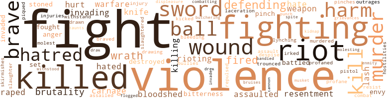
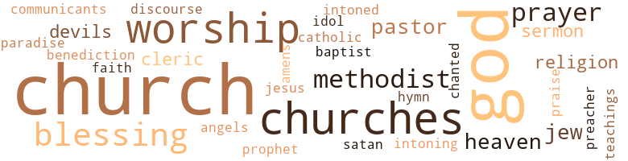

50 music-related terms matched in this text.
Most frequent terms in this topic: music (4); section (4); Cotillion (4); lines (3); dance (3)

carol.n.01
Definition: joyful religious song celebrating the birth of Christ
| word |
sentence |
| carol |
" The carol singing was good last night . |
cotillion.n.01
Definition: a ball at which young ladies are presented to society
| word |
sentence |
| Cotillion |
The Assembly Cotillion would be under way in just two days . |
| Cotillion |
After the war Hamilton was among the founders of the Assembly Cotillion and for many years remained one of its ardent patrons . |
| Cotillion |
" Never before has the Assembly had such elegant service , " one of the Cotillion managers was telling Peter . |
| Cotillion |
After Peter 's success of serving the Assembly Cotillion his business increased by leaps and bounds . |
dance.n.01
Definition: an artistic form of nonverbal communication
| word |
sentence |
| dances |
Several of the more forward coachmen , seeing charming wenches seated and apparently on the verge of boredom in the retainers ' room , requested and received dances at the first strain of the orchestra . |
| dance |
In the lull before the final dance number several coachmen decided the event had been so successful that from that day on the coachmen would give an annual ball for the benefit of the colored citizens of Philadelphia . |
| dances |
Not only did the Quakers again raise their voices in protest against this profaning of the Sabbath , but they were joined by white hoodlums , who mocked the colored worshippers on the highways with derisive remarks about the " heathen witch dances and ceremonies . " |
| dance |
Since the removal of the seat of government and its stately gatherings , the Assembly has become the most sought-after event of the dance season . |
dance.v.03
Definition: skip, leap, or move up and down or sideways
| word |
sentence |
| danced |
Miriam jumped up , hugged her father and danced a few steps in her glee . |
| danced |
Papa 's gon na be punished , " the quartette chanted as they danced around their smiling parent . |
| dance |
If these slaves have committed murder in their flight we too might dance at the end of a rope . " |
hymn.n.01
Definition: a song of praise (to God or to a saint or to a nation)
| word |
sentence |
| Hymn |
It was the famous colored Philadelphia band that had often marched in dress parades with the plumed and mounted First City Troop , and it was playing " The Battle Hymn of the Republic . " |
kettle.n.04
Definition: a large hemispherical brass or copper percussion instrument with a drumhead that can be tuned by adjusting the tension on it
| word |
sentence |
| kettle |
She opened the shutter , flecked away imaginary particles of dust from the small candy case off to one side , filled the tea kettle and lit the fire in the small stove . |
| kettle |
It did not take Peter long to fry a batch of bacon , a dozen eggs , and boil a large kettle of water to brew tea . |
music.n.01
Definition: an artistic form of auditory communication incorporating instrumental or vocal tones in a structured and continuous manner
| word |
sentence |
| music |
From one came mournful music from the strumming of a stringed instrument . |
| Music |
Music enlivened the chatter as couple after couple moved down the receiving line of patrons and patronesses . |
| music |
Sally sat apparently quiet in the family pew as the wedding music was played . |
| music |
Martial music was blared out by the ill-tuned combination . |
| music |
Then , faintly , the music of a band became audible . |
musical_instrument.n.01
Definition: any of various devices or contrivances that can be used to produce musical tones or sounds
| word |
sentence |
| instrument |
From one came mournful music from the strumming of a stringed instrument . |
| instrument |
" Would you be kind enough to draw up the instrument after the fifth of November and let it run for ninety days ? " |
| instrument |
You may expect both the instrument and money to be ready here for you any time after high noon on that day . " |
phrase.n.02
Definition: a short musical passage
| word |
sentence |
| phrase |
It seemed an eternity before the phrase was repeated the third time . |
pipe.n.04
Definition: a tubular wind instrument
| word |
sentence |
| pipe |
Peter was seated by the stove contentedly smoking the pipe Sally had given him for a gift . |
preamble.n.01
Definition: a preliminary introduction to a statute or constitution (usually explaining its purpose)
| word |
sentence |
| preamble |
" I quote you the preamble of the Constitution of this great nation , which guarantees to all men the right to life , liberty and the pursuit of happiness . |
processional.n.01
Definition: religious music used in a procession
| word |
sentence |
| processional |
" Sally , you must hurry if we 're to get to St. Thomas ' Church before Vicar Jones forms the processional , " Peter was urging his wife as she fussed with the youngsters preparing them for worship on the clear , sunny Sunday before Thanksgiving . |
section.n.01
Definition: a self-contained part of a larger composition (written or musical)
| word |
sentence |
| section |
Peter , his lawyer and Absolom strode up the aisle to the barrister 's section and were seated . |
| section |
The other section listed one thousand testimonies of brutal , inhumane treatment of slaves . |
| section |
Despite his frailities , he insisted that his son take him in their carriage to the midtown business section . |
| section |
The freemen openly accused the Quakers of still teaching their slaves how to read and write and taking them to the meeting house to sit in a section set apart . |
sing.v.02
Definition: produce tones with the voice
| word |
sentence |
| sing |
Slave and freemen , black and white , Protestant and Catholic trudged through the snow to sing . |
| sang |
When I fell in love with your mother I was so happy I sang and talked like a man possessed . " |
| sang |
Piping hot ! " he sang again as his slightly bent form took shape out of the misty fog hovering over the area that brisk October day . |
| sing |
As the tune became distinguishable , old Peter softly began to sing : Mine eyes have seen the glory of the coming of the Lord , He is trampling out the vintage where the grapes of wrath are stored , He has loosed the fateful lightning of His terrible swift sword - His truth is marching on . |
singing.n.01
Definition: the act of singing vocal music
| word |
sentence |
| singing |
" The carol singing was good last night . |
| singing |
Naturally an emotional people , their reaction to a well-preached sermon was sometimes an outburst of yelling , screaming , shouting and singing , or all four combined . |
tone.v.01
Definition: utter monotonously and repetitively and rhythmically
| word |
sentence |
| intoned |
The court crier then intoned the usual legal phraseology and the case was under way . |
| intoning |
Not a soul stirred as the musical tradesman trudged through the cobble-stoned High Street of colonial Philadelphia intoning his wares . |
| chanted |
Papa 's gon na be punished , " the quartette chanted as they danced around their smiling parent . |
tune.n.01
Definition: a succession of notes forming a distinctive sequence
| word |
sentence |
| melody |
The plaintive , minor-key melody had a pleasing effect upon Lias . |
| lines |
His sparkling brown eyes had merry twinkle lines fanning out on each side of his face . |
| line |
Music enlivened the chatter as couple after couple moved down the receiving line of patrons and patronesses . |
| lines |
Peter 's prematurely salt-and-pepper hair , topping and outlining his wind-toughened face in clean fine lines , had a silky quality . |
| line |
Sally and Peter , the Fortens , the Absolom Joneses , the Richard Allens , the Allmonds , the Mark Vennings and the bridal party formed the receiving line at the reception . |
| strains |
All of these social stresses and strains forced Negro organizations into closer harmony and working agreements . |
| strains |
The upper-class colored did not feel the stresses and strains of the various economic and social forces . |
| lines |
" If our armies fail to hold their lines you 'll have no homes to fight from . |
| tune |
As the tune became distinguishable , old Peter softly began to sing : Mine eyes have seen the glory of the coming of the Lord , He is trampling out the vintage where the grapes of wrath are stored , He has loosed the fateful lightning of His terrible swift sword - His truth is marching on . |
upright.n.02
Definition: a piano with a vertical sounding board
| word |
sentence |
| uprights |
For the past week workmen had been clearing snow from the sidewalks in order to anchor uprights for the canopy leading from the curbing to the entrance . |
259 violence-related terms matched in this text.
Most frequent terms in this topic: fight (27); violence (18); fighting (10); killed (10); wound (7)

anger.n.01
Definition: a strong emotion; a feeling that is oriented toward some real or supposed grievance
| word |
sentence |
| anger |
I 'll always remember the great wrong which came from my anger . " |
| anger |
May their hearts be softened and Thy spirit become a part of them and we and our loved ones no longer feel the weight of their unjust anger . |
assail.v.01
Definition: attack someone physically or emotionally
| word |
sentence |
| assaulted |
As soon as you were assaulted the signal was given , and when you were carried away eight ruffians were left bleeding and moaning on the street . |
| assaulted |
They were assaulted both on their way to and from their church worship . |
| assaulted |
A hall and church were burned down ; colored homes were looted ; pretty brown women were raped , assaulted and beaten in their homes . |
attack.v.01
Definition: launch an attack or assault on; begin hostilities or start warfare with
| word |
sentence |
| assailed |
The man fell back , more startled than when the outburst had first assailed his cars . |
bandy.v.02
Definition: exchange blows
| word |
sentence |
| bandied |
Thus , Davis and Buchanan bandied words and exchanged commissions to discuss the disposal of the Fort Sumter incident , and slaves and freemen wondered what their fate would be . |
battle.v.01
Definition: battle or contend against in or as if in a battle
| word |
sentence |
| combat |
Jefferson did little to combat the British blockade except to send commission after commission to England to protest . |
| battled |
We 've battled so hard to lift ourselves . |
| combatting |
City officials , busy combatting the problem of an overcrowded city , had little time to devote to the Negro problem . |
| battled |
Some have seized arms and battled white rebels . |
bleeding.n.01
Definition: the flow of blood from a ruptured blood vessel
| word |
sentence |
| bleeding |
As soon as you were assaulted the signal was given , and when you were carried away eight ruffians were left bleeding and moaning on the street . |
bloodshed.n.01
Definition: the shedding of blood resulting in murder
| word |
sentence |
| bloodshed |
This matter of marriage sparked another racial conflict that had dire consequences which caused bloodshed for over ten years . |
| bloodshed |
" This savage killing and slaughter must cease , " spokesmen from the Arch and Race Street meetings told the mayor as they stood in his office the Monday following the week of bloodshed . |
| bloodshed |
It 's the blacks who are causing all this bloodshed , " the mayor responded . |
bruise.n.01
Definition: an injury that doesn't break the skin but results in some discoloration
| word |
sentence |
| bruises |
Peter , on his way home after helping serve a party at his establishment , was stoned , and he barely managed to escape the mob and arrived home , hatless and breathless , with no more than several mean bruises . |
brush.n.06
Definition: a minor short-term fight
| word |
sentence |
| skirmishes |
A delay in the relaying of the news of the cessation of hostilities caused several additional skirmishes between the United States forces , an army of black and white soldiers under General " Stonewall " Jackson , and a British expedition attacking New Orleans , late in January of 1815 . |
butcher.v.01
Definition: kill (animals) usually for food consumption
| word |
sentence |
| slaughtered |
" It 's hard to advocate peaceful means when we 're being so ruthlessly slaughtered . " |
| butchering |
In his hand he held a gleaming , fourteen-inch heavy-bladed butchering knife . |
cannon.n.04
Definition: heavy automatic gun fired from an airplane
| word |
sentence |
| cannon |
One almost sent a cannon ball through their vessel 's bottom . " |
contemn.v.01
Definition: look down on with disdain
| word |
sentence |
| despise |
Our Lord was a carpenter , but I despise the fate that keeps me constantly hewing , sawing and planing , " complained Loyd . |
defy.v.01
Definition: resist or confront with resistance
| word |
sentence |
| withstand |
The Army needs young , virile men who can withstand the rigors of war - men who can eat rough food , live close to the soil , and force the body to extremes in exertion , yet meet the enemy and let him know he is in battle . " |
| withstood |
The homespun philosophy and simple language of Lincoln withstood all the bombardment of flowery orators . |
desecrate.v.01
Definition: violate the sacred character of a place or language
| word |
sentence |
| profaned |
He does n't want any of the traditions diluted or any of the symbols profaned through hastiness . " |
| profane |
It 's foolish to waste our energies in silly arguments that profane our order in public places . " |
destroy.v.04
Definition: put (an animal) to death
| word |
sentence |
| destroyed |
" The defendant then swore and stormed out of the place , slamming the door behind him , but not before he again warned me my place of business would be destroyed if I did n't stop taking catering jobs from white victualers . " |
| destroyed |
Three days of murderous rioting netted a total of two destroyed churches , three colored men killed , thirty-one houses completely destroyed and hundreds injured . |
displeasure.n.01
Definition: the feeling of being displeased or annoyed or dissatisfied with someone or something
| word |
sentence |
| displeasure |
Wentworth expressed his displeasure and attempted to dissuade General Washington from admitting black men , but the emblem of Masonry was recognized on Prince Hall 's jacket , and when he proved his right to wear it the order was given to admit men of color . " |
draw.v.23
Definition: pull (a person) apart with four horses tied to his extremities, so as to execute him
| word |
sentence |
| drawing |
I was going over some accounts that my clerk had just completed and was about to instruct him in drawing up certain estimate statements when this man entered . |
| drawn |
His last mental impression was that he was being drawn into indescribable heavenly bliss as wave after wave of ecstasy generated in and around his amorous partner . |
| drew |
He drew up his Emancipation Proclamation and issued an ultimatum that , unless the southern states returned to the Union by January 1 , 1863 , all slaves within their borders would be declared free . |
| draw |
" Would you be kind enough to draw up the instrument after the fifth of November and let it run for ninety days ? " |
envy.n.01
Definition: a feeling of grudging admiration and desire to have something that is possessed by another
| word |
sentence |
| envy |
His ardent courtship of Sarah attracted the admiration of the oldsters and the envy of the maidens . |
| envy |
Black , smoldering envy welled up within colored freemen and slaves . |
ferociousness.n.01
Definition: the trait of extreme cruelty
| word |
sentence |
| brutality |
" Citizens demand an end to this brutality . " |
| brutality |
" If there were more men in the world like you slavery would lose most of its brutality , " Peter said . |
| brutality |
The Quakers were horrified by the continued display of violence and brutality toward the blacks , both slave and free . |
| brutality |
" We ask only to be treated like human beings and protected from the brutality of ruffians who neither fear God nor respect His people . " |
fight.n.02
Definition: the act of fighting; any contest or struggle
| word |
sentence |
| fighting |
But they did not want Peter jailed in connection with the fighting . |
fight.n.05
Definition: a boxing or wrestling match
| word |
sentence |
| fight |
As soon as the slaves had rescued Peter from the mob they brought him two blocks from the scene of the fight . |
| fights |
A smoldering sullenness soon developed between the factory white workers and the Negro roustabouts that soon flared into fist fights as they walked to and from the factory . |
| fights |
Brawls between blacks and whites were reduced to personal fights as they met in the streets , but nothing like a riot occurred until 1840 . |
| fight |
Men fight and die . |
| fight |
Lincoln , not able to win in a battle to exclude slavery , refused to accept without a fight the repudiation of the policy established in 1820 that , for each acceptance of a slave state , a free state would be admitted to the Union . |
fight.v.02
Definition: fight against or resist strongly
| word |
sentence |
| defending |
Again and again the defending lawyer tried to challenge the right of a black man to press charges against a free white citizen . |
| fight |
" It 's not the only thing you will have to fight . |
| fighting |
Peter Mollineaux returned battered and bruised from his fighting abroad . |
| fighting |
Escaping slaves knew nothing except stealing food for their sustenance , fighting among themselves as marks of physical prowess , and doing violence to their common enemy , the white man . |
| fight |
" Are we to go out of business because our pigheaded leaders ca n't see that a black man can fight as well as a white man ? " |
| fight |
How can we know the men who fight for us are giving their all for the peace and security of our homes ? |
| fight |
I , for one , would like to be in action , and there are many more freemen who feel just as I. " " Peter , you 're too old to fight . |
| fighting |
" Some day America will realize that in her black men she has fighting strength which ca n't be surpassed . |
| fight |
We can stand the rigors of military life and we know how to fight and live . |
| fought |
England fought only in spurts . |
| fighting |
In what little land fighting that had occurred , America had held the upper hand up to this point . |
| fight |
Peter , Absolom , Richard , Forten and the other leaders now had to fight out the battles of the freemen singlehandedly . |
| fighting |
So violent did the fighting become that several buildings were torn down and colored people were beaten almost to death in the streets and in alleys . |
| defending |
" We 're the victims , yet we are the ones who are warned of the penalty of the law if we 're caught defending either our person or our possessions . |
| fight |
The thugs had received word that the blacks of Philadelphia had pledged themselves to fight to the death if they were again attacked . |
| fight |
'' Will we have to fight again ? |
| fight |
The colored , still determined to fight to the death if necessary , struggled furiously and courageously . |
| fight |
All found common ground here upon which to walk , talk and fight . |
| defending |
" What 's the meaning of all this about Lincoln defending the slaves , Father ? '' |
| fight |
This day and age needs young men to fight the terrible battles that beset the nation . " |
| defending |
White men and boys jubilantly waved the flag , denounced the rebels and flocked to recruiting stations to enlist their aid in defending the Union . |
| fight |
This battle was for freedom , yet they , the victims and the cause , were banned by a silly notion on the part of whites that black men could not fight in white men 's battles . |
| fighting |
I 'll die fighting in my home before such an unhappy day arrives . " |
| fight |
" If our armies fail to hold their lines you 'll have no homes to fight from . |
| defending |
This flag is mine even if the glory of defending it is denied me . |
| fight |
If the freemen and slaves of the North were denied the right to fight they were not denied the opportunity to work . |
| fight |
The rebels do nothing but eat , sleep and fight . |
| fights |
He fights for our complete recognition as citizens . " |
| fight |
To have been considered as less than men able to fight to defend the land we claim as home deeply hurt our pride . |
| fight |
Ca n't you see that if we 've enjoyed the benefits of living here it 's our duty to fight to protect our nation ? " |
| fight |
" My action in getting the petitions signed for colored men to fight in the army has disturbed her greatly . |
| fight |
" Why not let the white men fight it Out ? |
| fighting |
They started it and they 're fighting over the spoils . |
| fighting |
" Mother , the white man is fighting this war for our benefit . |
| fight |
True , none of them held commissions , but they were able to follow orders and meet death with the same heroism as other men inspired to fight for a just cause . |
| fighting |
He mentioned the value of their service in releasing fighting men from the onerous duties most soldiers face during warfare . |
| fight |
They paraded up and down the busiest streets of the city joyously shouting they were at last men - they were going to fight for their country . |
| fight |
The last one affected Peter 's liver , according to the bleeder , and I fear he wo n't be able to fight through this time . |
| fight |
He told you our boys must fight to preserve that freedom . |
| fight |
You fight and stay outdoors long after nightfall when all decent people should be in bed . |
| fought |
Many were law-abiding and only fought when challenged by another bully . |
flog.v.01
Definition: beat severely with a whip or rod
| word |
sentence |
| trounced |
His mother had immediately soundly trounced him for his efforts ; and when the incident was reported to Peter that night another pants-warming session and parental lecture had followed . |
| flogged |
If you 're discovered by night watch you 'll be flogged and jailed . " |
gall.v.02
Definition: irritate or vex
| word |
sentence |
| irked |
John 's companion of the evening , a more restrained wench of a slave woman , whose duties as house servant had included the bearing of a bastard child for her master , became irked and piqued as he toyed with her in order to observe the ultimate conclusion of the amorous pair . |
grudge.n.01
Definition: a resentment strong enough to justify retaliation
| word |
sentence |
| grievances |
Young Peter and his companions studiously avoided any further discussions that might lead to personal grievances after this unfortunate occurrence . |
harm.v.01
Definition: cause or do harm to
| word |
sentence |
| harm |
" Those ruffians tried to harm him , Sister Sally , but I do n't think they 'll try it again . |
| harm |
They wo n't try to harm a freeman who marries a white woman . ' |
| harm |
It 'll harm business if their taint covers our innocent little ones . " |
hate.n.01
Definition: the emotion of intense dislike; a feeling of dislike so strong that it demands action
| word |
sentence |
| hatred |
They glared at the colored people , not attempting to hide their hatred and contempt . |
| hatred |
Destruction of the nation 's main city served only to fan the flames of hatred higher for the British . |
| hatred |
Thus , though he brought the whites to a greater respect for Negroes , he and his followers , by virtue of their zeal , helped spread a wave of hatred for the Abolitionists , who were more and more being charged with designs to upset the economy of America by their political enemies , the Democrats , These Democrats controlled Congress . |
| hate |
Tall , sad-faced Lincoln took office as President amid an atmosphere charged with hate and uncertainty . |
| hatred |
Let us not harbor hatred in our hearts for our enemies . |
| hatred |
His eyes flashed and Peter momentarily felt the venomous hatred in the man . |
hate.v.01
Definition: dislike intensely; feel antipathy or aversion towards
| word |
sentence |
| hate |
She , thinking it a most courageous thing to do , brought it to the Quakers so that those who hate slavery might do likewise . " |
| hated |
The Quakers were especially hated because of their effective boycott of slave products . " |
| hate |
Among these poor whites were large numbers of immigrants who had been taught to hate blacks because they competed with them for jobs . |
| hated |
Even hated slavery , which we want to see speedily wiped out , is not as degrading as this affront to our manhood . |
| hated |
I could n't bear to see the hated slave owners come here and seize all our possessions and return you and father , and all other free men of color , back to the living hell of slavery . |
hostility.n.01
Definition: a hostile (very unfriendly) disposition
| word |
sentence |
| hostilities |
A delay in the relaying of the news of the cessation of hostilities caused several additional skirmishes between the United States forces , an army of black and white soldiers under General " Stonewall " Jackson , and a British expedition attacking New Orleans , late in January of 1815 . |
hostility.n.02
Definition: a state of deep-seated ill-will
| word |
sentence |
| enmity |
Peter generally was beloved and respected , and none wanted his enmity . |
indignation.n.01
Definition: a feeling of righteous anger
| word |
sentence |
| outrages |
City authorities did nothing to halt the outrages until the situation was reversed . |
injury.n.01
Definition: any physical damage to the body caused by violence or accident or fracture etc.
| word |
sentence |
| injury |
He then smeared ointment on a square-cut piece of gauze , backed it with cotton and bandaged the injury . |
| injuries |
Now that it 's over , I know the surprise gave me greater fright than my injuries . " |
| harm |
It 's a presentation of a real situation that can cause much harm if it comes to pass . " |
| hurt |
His usually gentle sisters were curt toward him , and the hurt look in his mother 's eyes was never obliterated by the continued motherly affection she tried to shower upon him . |
| harm |
But the women do gossip and often cause harm . " |
| harm |
Our son will come to no harm . " |
invade.v.01
Definition: march aggressively into another's territory by military force for the purposes of conquest and occupation
| word |
sentence |
| invading |
" Sally , my darling , these older children of yours just do n't want any stranger invading their mama 's bedroom . |
| invaded |
The same was true of a mulatto or quadroon who invaded the ranks of the blacks . |
| invading |
Several Canadian rebuffs of invading American forces took some of the glitter from the victories of the United States forces also . |
| invaded |
British General Prevost , at the head of 12,000 men based at Montreal , invaded New York by way of Lake Champlain . |
| invading |
" An invading army always has the worst of warfare . |
| invade |
" Even our own Prince Hall , accompanied by Cyrus Jonbus , Beuston Slinger and Thomas Sanderson went to Craigie Hall , in Cambridge , Massachusetts , when the British Army threatened to invade . |
kick_back.v.02
Definition: spring back, as from a forceful thrust
| word |
sentence |
| kicked |
So viciously had the slaves beaten , kicked and stomped the white hoodlums that they were reasonably certain two or more would n't get up again for a long time . |
kidnap.v.01
Definition: take away to an undisclosed location against their will and usually in order to extract a ransom
| word |
sentence |
| kidnap |
Several kidnap bands were captured and jailed and the menace was slowly brought under control . |
kill.v.10
Definition: cause the death of, without intention
| word |
sentence |
| killed |
Four days later six blacks were killed in cold blood by white roving bands and two houses in colored sections were burned to the ground . |
| kill |
Punishment received for his unbrotherly action toward his sister had fastened in Johnny 's mind the wrongness of sexual exploration among the girls , but this did not kill his inclination to feel and handle a female body . |
| killed |
They 've killed him . |
| killed |
Periodically , Negroes were caught and sadistically killed . |
| killed |
Five white men were killed by roving bands of blacks , and four hapless blacks screamingly breathed their last under the hands of bloodthirsty whites . |
| killed |
More able men came to him and tried to lift much of the great burden of the church from his shoulders , but Richard Allen would not sit quietly by while his black brothers were mistreated , abused and killed . |
| killed |
Two colored people were killed and many severely injured before the mayor and his police dispersed the mob . |
| killed |
Three days of murderous rioting netted a total of two destroyed churches , three colored men killed , thirty-one houses completely destroyed and hundreds injured . |
| killed |
Three whites and one colored were killed in the riot . |
| killed |
One such fellow killed five before a southern bullet felled him . |
| kill |
He 's an able man on the platform , having gone to England and Scotland to exhort the British to refuse to buy southern cotton , and thus kill the backbone of slavery . |
| kill |
" Let the whites kill each other off , " one of young Peter 's companions was saying as the usual group met at lunch . |
| killed |
You must n't go into battle and be killed . " |
| kill |
God did n't mean for men to kill each other . |
| kill |
Let them kill each other if they must . " |
| kill |
Massa kill him if he catch him . |
killing.n.01
Definition: an event that causes someone to die
| word |
sentence |
| killings |
The killings stopped but the ill will between the two groups remained at fever pitch . |
| killings |
Business thrived despite the loss of some white trade after the killings that brought on the militia . |
killing.n.02
Definition: the act of terminating a life
| word |
sentence |
| killing |
" This savage killing and slaughter must cease , " spokesmen from the Arch and Race Street meetings told the mayor as they stood in his office the Monday following the week of bloodshed . |
knife.n.02
Definition: a weapon with a handle and blade with a sharp point
| word |
sentence |
| knife |
You , who had always been so industrious with a knife and fork ? |
| knife |
In his hand he held a gleaming , fourteen-inch heavy-bladed butchering knife . |
| knife |
" Where on earth did you get that knife ? " |
laceration.n.01
Definition: a torn ragged wound
| word |
sentence |
| laceration |
Slightly above his left ear a trickle of blood was oozing from a small laceration . |
lynching.n.01
Definition: putting a person to death by mob action without due process of law
| word |
sentence |
| lynching |
What started out as a skull-busting spree on the part of whites soon developed into regular lynching parties . |
malice.n.01
Definition: feeling a need to see others suffer
| word |
sentence |
| spite |
Peter , in spite of his size , had nothing to fit Lias except an old , coarse , heavy shirt , some pants given him by one of his white patrons , and an oversized pair of boots he had at one time worn during a heavy snowstorm . |
molest.v.01
Definition: harass or assault sexually; make indecent advances to
| word |
sentence |
| molest |
I 'll have the proper papers prepared , and if we 're stopped for examination both of us can establish our clerical status and they dare not molest us . |
| molesting |
As these taunts continued , and the man did not attempt to retaliate , the gang molesting him became bolder . |
murder.n.01
Definition: unlawful premeditated killing of a human being by a human being
| word |
sentence |
| murder |
The necessary papers for a freeman can be secured from one of our Quaker Friends who is so set against slavery that he 'll do anything , excluding murder and treason , to aid a slave to escape . " |
| murder |
" Yes , it surely must be mass murder . |
| murder |
They want to murder Bonaparte so badly they 're willing to starve us to death to keep a handful of our men out of the French army . " |
| murder |
I can only see that it 's murder under another name . |
| murder |
A freeman caught harboring a slave , if found guilty , could become enslaved or lose his life - especially if murder had been committed in the escape . |
| murder |
If these slaves have committed murder in their flight we too might dance at the end of a rope . " |
murder.v.01
Definition: kill intentionally and with premeditation
| word |
sentence |
| murdered |
" Dost thee think someone has been murdered ? '' the woman asked her man as he too stared in the direction of the disturbance . |
musket.n.01
Definition: a muzzle-loading shoulder gun with a long barrel; formerly used by infantrymen
| word |
sentence |
| musket |
I regret that my infirmities prevent me from shouldering a musket . |
musket_ball.n.01
Definition: a solid projectile that is shot by a musket
| word |
sentence |
| ball |
Black artisans , including whitesmiths , blacksmiths , boot-and shoemakers , painters , dyers and scourers , were taxed with business to help beatify and make luxurious the trappings and settings for the descendants of the fifty-nine first families of Philadelphia who had founded the ball in 1748 . |
| ball |
Every man and woman of color at that ball would arrive with an arrogance engendered only by the pride of being associated with " quality folks . " |
| ball |
The ball was about three-quarters over before the body servants and maids began to feel comfortable . |
| ball |
In the lull before the final dance number several coachmen decided the event had been so successful that from that day on the coachmen would give an annual ball for the benefit of the colored citizens of Philadelphia . |
| ball |
One almost sent a cannon ball through their vessel 's bottom . " |
| ball |
A manager of the Assembly Ball wants you to prepare and serve the iced punch at the grand ball this season . |
open_fire.v.01
Definition: start firing a weapon
| word |
sentence |
| fired |
As the father attempted to force the door , one of the trapped men fired a pistol through it . |
| fired |
James Madison came roaring into office as President with a militancy that fired the nation . |
| fired |
Fort Sumter was fired upon the second day after Peter 's return to his parlor armchair . |
| fired |
That flag was fired upon but the Federal ship laden with supplies went through . |
pain.v.02
Definition: cause emotional anguish or make miserable
| word |
sentence |
| hurt |
" Well , it wo n't hurt to ask them to stop running as if each bale of cotton is a hot biscuit to be put on the dinner table , " another offered . |
| hurt |
My brother 's young one was hurt trying to escape their clutches last night . |
pinch.n.02
Definition: an injury resulting from getting some body part squeezed
| word |
sentence |
| pinches |
Freemen and slaves talked about the situation , but few personally felt the pinches of the blockade . |
| pinch |
It was true that prices steadily mounted , but so many of the colored population raised food on outlying plots of ground , or on farms , they were able to escape the pinch for the time being . |
| pinch |
Peter 's business started to feel the pinch and he began spending his reserve funds . |
pique.v.01
Definition: cause to feel resentment or indignation
| word |
sentence |
| piqued |
John 's companion of the evening , a more restrained wench of a slave woman , whose duties as house servant had included the bearing of a bastard child for her master , became irked and piqued as he toyed with her in order to observe the ultimate conclusion of the amorous pair . |
pistol.n.01
Definition: a firearm that is held and fired with one hand
| word |
sentence |
| pistol |
As the father attempted to force the door , one of the trapped men fired a pistol through it . |
punch.n.01
Definition: (boxing) a blow with the fist
| word |
sentence |
| punch |
A manager of the Assembly Ball wants you to prepare and serve the iced punch at the grand ball this season . |
rape.n.03
Definition: the crime of forcing a woman to submit to sexual intercourse against her will
| word |
sentence |
| assault |
" Father Absolom Jones is already on his way to city hall to register murderous assault charges against the men they took to Blockley for treatment . |
rape.v.01
Definition: force (someone) to have sex against their will
| word |
sentence |
| raped |
He even dared tell that a free woman had been raped in a field by them as she returned home from her work at dusk . |
| raped |
Colored girls and women were raped by mobs composed of persons who were obviously of the white working classes . |
| raped |
One night the daughter of a freeman was raped by two whites in a field near her home . |
repel.v.03
Definition: force or drive back
| word |
sentence |
| repulsed |
Philadelphia 's black battalion never saw service , for the British were repulsed and the Treaty of Ghent was signed on December 24 . |
resentment.n.01
Definition: a feeling of deep and bitter anger and ill-will
| word |
sentence |
| bitterness |
Do n't let bitterness turn you against God or His creatures . " |
| resentment |
She , while as thirsty for sexual expression as he , by now had a smoldering resentment , because she could not fathom the quirk that had made him desire observation instead of participation . |
| resentment |
Growing resentment against use of cotton from slave states in the south in the production of cloths made mill owners hesitate to turn there for supplies . |
| resentment |
When President Madison entered office in March , 1809 , he came full of resentment and ready for positive action against England . |
| bitterness |
The bitterness and threats of Congressmen had his head in a whirl . |
resist.v.04
Definition: withstand the force of something
| word |
sentence |
| resist |
Because of the impressments on the high seas the American merchantmen began to carry arms and to resist attempts of British crews to board American trading vessels . |
riot.n.01
Definition: a public act of violence by an unruly mob
| word |
sentence |
| riot |
As the men made a motion to move toward both Peter and the constable , the latter laid hold of the Irishman 's arm , saying , " I arrest you in the name of the law for threats , inciting to riot and resisting arrest . " |
| riot |
They were all the constable found when he finally arrived with the riot detail . " |
| riot |
While Mike was sent to jail for six months on the resisting arrest and inciting to riot charges , the major issue of the rights of a free black man was still unsettled . |
| riots |
The riots were not the pink-tea variety that characterized the town a decade or two ago ; they turned into pitched battles where the number of dead determined which side was the victor . |
| riot |
The clamor about the Negro church was not the only thing inspiring riot , however . |
| riots |
It was barely a year after the series of riots that a Cuban slave , driven almost crazy by the inhuman treatment of his master , turned on him and bludgeoned him to death with an axe handle . |
| riot |
Brawls between blacks and whites were reduced to personal fights as they met in the streets , but nothing like a riot occurred until 1840 . |
| riot |
Three whites and one colored were killed in the riot . |
rioting.n.01
Definition: a state of disorder involving group violence
| word |
sentence |
| rioting |
Three days of murderous rioting netted a total of two destroyed churches , three colored men killed , thirty-one houses completely destroyed and hundreds injured . |
| rioting |
The September town meeting condemned the rioting and voted to reimburse the victims of the wild disorder . |
| riotings |
Both the Race and Arch Street Friends ' meeting houses were disturbed over the increased number of riotings . |
sic.v.01
Definition: urge to attack someone
| word |
sentence |
| set |
He has his heart set upon hearing Frederick Douglass , Anna Dickinson and W. D. Kelly as they make their appeals . " |
| set |
Our men are set upon as they go about their peaceful business . |
slaughter.n.03
Definition: the savage and excessive killing of many people
| word |
sentence |
| carnage |
The Quakers finally brought a halt to the carnage . |
| slaughter |
" This savage killing and slaughter must cease , " spokesmen from the Arch and Race Street meetings told the mayor as they stood in his office the Monday following the week of bloodshed . |
| carnage |
God 's hand put an end to the carnage this time . |
| carnage |
Only the arrival of the militia , armed with artillery , brought a halt to the carnage . |
stone.v.01
Definition: kill by throwing stones at
| word |
sentence |
| stoned |
So inflamed did the whites become that they stoned Lucretia and all the blacks they could lay their hands upon . |
| stoned |
Peter , on his way home after helping serve a party at his establishment , was stoned , and he barely managed to escape the mob and arrived home , hatless and breathless , with no more than several mean bruises . |
strong-arm.v.02
Definition: be bossy towards
| word |
sentence |
| bullies |
He is well and hopes to return home as soon as he 's met a few more of the English bullies . |
sword.n.01
Definition: a cutting or thrusting weapon that has a long metal blade and a hilt with a hand guard
| word |
sentence |
| sword |
Is n't there a Biblical passage which tells of living by the sword and dying by the sword ? |
| sword |
Is n't there a Biblical passage which tells of living by the sword and dying by the sword ? |
| sword |
Ca n't the slaves use the sword for freedom as well as be kept in slavery by the sword ? " |
| sword |
Ca n't the slaves use the sword for freedom as well as be kept in slavery by the sword ? " |
| swords |
" If the slaves had enough swords , they might . |
| swords |
If they had understanding and knowledge of how to use the necessary number of swords under a competent leader then they might be successful . |
| sword |
As the tune became distinguishable , old Peter softly began to sing : Mine eyes have seen the glory of the coming of the Lord , He is trampling out the vintage where the grapes of wrath are stored , He has loosed the fateful lightning of His terrible swift sword - His truth is marching on . |
twit.n.02
Definition: aggravation by deriding or mocking or criticizing
| word |
sentence |
| taunts |
As these taunts continued , and the man did not attempt to retaliate , the gang molesting him became bolder . |
violence.n.01
Definition: an act of aggression (as one against a person who resists)
| word |
sentence |
| violence |
Never before had anyone wanted to offer violence to me . " |
| violence |
" He spoke with vigor of the violence of the scalawags . |
| violence |
There was much mob violence common to this period . |
| violence |
This violence lasted several years . |
| violence |
No action was taken , either legally or otherwise , to protect the blacks from violence , but a more tolerant spirit pervaded the community as the epidemic was brought under control . |
| violence |
Escaping slaves knew nothing except stealing food for their sustenance , fighting among themselves as marks of physical prowess , and doing violence to their common enemy , the white man . |
| violence |
The result was that violence and even death came often in the slave settlements as male slaves came to death grips with others over female slaves . |
| violence |
This violence served more than anything else to separate the slaves from the free blacks . |
| Violence |
Violence of the more vicious sort from their white enemies again sprang up , and free man and slave kept as much indoors as possible , for the wearing of a black skin after nightfall on the streets of Philadelphia was a dangerous and often fatal thing . |
| violence |
This derision of his worship was more than the black man could stand , and violence of greater proportions than ever flared anew . |
| violence |
Citizens , black and white , were fearful and enraged at this show of violence . |
| violence |
Colored people were warned to expect punishment when any of their number were arrested in connection with mob violence . |
| Violence |
Violence ceased for a while , but colored people whose roots had not been fastened deeply in the soil of Philadelphia pulled up their belongings and migrated to other places . |
| violence |
Many good black citizens were lost in this manner , for the troublesome escaped slaves , neither frightened nor hopeful , accepted the violence as the cost of freedom and resolved to brave it out , just as they had been forced to face death and sudden terror when they had labored under the lash of the whip . |
| violence |
The Quakers were horrified by the continued display of violence and brutality toward the blacks , both slave and free . |
| violence |
This factual information served for a time to dispel much of the inclination toward violence upon colored people in Philadelphia . |
| violence |
The last of the violence happened in 1842 . |
| violence |
His beetled brow and broad nose , as well as his puffed-up ears , bore scars of violence . |
| violence |
" They 've committed no violence . |
violence.n.03
Definition: a turbulent state resulting in injuries and destruction etc.
| word |
sentence |
| violence |
Many poor whites attended such public gatherings and they not only heckled the speakers but were inflamed to go out and practice their violence upon colored people . |
war.n.03
Definition: an active struggle between competing entities
| word |
sentence |
| warfare |
" An invading army always has the worst of warfare . |
| warfare |
" Slave workmen relieved Confederate soldiers of all the drudgery of warfare , said some of our returning wounded men . " |
| warfare |
He mentioned the value of their service in releasing fighting men from the onerous duties most soldiers face during warfare . |
weapon.n.01
Definition: any instrument or instrumentality used in fighting or hunting
| word |
sentence |
| weapon |
Men armed themselves with every kind of weapon , barricaded their homes and waited for the coming of night when the thugs would again roam . |
| weapon |
Could n't it be that Mr. Lincoln is attempting to take a dangerous weapon out of the hands of his enemies ? " |
| weapon |
Peter and countless other freemen of color rushed to enlist their services in defense of their country , but they all returned crestfallen and beaten by a hidden enemy armed with a lethal weapon . |
weather.v.01
Definition: face and withstand with courage
| word |
sentence |
| brave |
" It was a brave thing . |
| brave |
Never have I seen a more generous and brave soul . |
| brave |
" Brave men follow him , " Loyd agreed , " for brave leaders need brave men . |
| brave |
" Brave men follow him , " Loyd agreed , " for brave leaders need brave men . |
| braved |
Peter Battis braved the vicious gossip of the populace by attending the final rites . |
| brave |
Many good black citizens were lost in this manner , for the troublesome escaped slaves , neither frightened nor hopeful , accepted the violence as the cost of freedom and resolved to brave it out , just as they had been forced to face death and sudden terror when they had labored under the lash of the whip . |
| brave |
Mr. Stanton remembered the brave action of our Negroes of 1812 ; and , with a bit of prodding on the part of Frederick Douglass , we won him to our cause after an hour 's debate . " |
whip.v.04
Definition: strike as if by whipping
| word |
sentence |
| lash |
Here , in uninhibited fashion , they could yell , shout and scream without fear of the lash or of going to jail as disorderly persons . |
| lash |
Many good black citizens were lost in this manner , for the troublesome escaped slaves , neither frightened nor hopeful , accepted the violence as the cost of freedom and resolved to brave it out , just as they had been forced to face death and sudden terror when they had labored under the lash of the whip . |
| lash |
A man named John Brown has a band of slaves which seems to be terrorizing those who have laid the lash upon them so mercilessly . " |
wound.n.01
Definition: an injury to living tissue (especially an injury involving a cut or break in the skin)
| word |
sentence |
| wound |
A new wound is always distressing - partly because of shock . |
| wound |
" I 'll attend the head wound first , Agnes . |
| wound |
Hold Peter 's head steady while I shave the hair from around this wound . " |
| wound |
With deft fingers Richard removed the clotting blood and hair and swabbed alcohol into the raw wound as Peter grimaced . |
| wound |
It covers only a small wound . " |
| wound |
If no infection or cold from this uncertain weather pesters that wound Peter will be as good as new in a few days . " |
| wound |
His wound was not fatal , but apparently the southern fighters were frightened that their slaves would see the black man bearing arms against them and rise up in rebellion within their camps . " |
wrath.n.01
Definition: intense anger (usually on an epic scale)
| word |
sentence |
| wrath |
The joy of accomplishment soon faded to despair as word of the new outburst reached the many thousands of colored people , who began to stay indoors and out of sight to escape the wrath of an enemy they had no reason to have . |
| wrath |
The thugs then stopped beating the colored men and turned their wrath upon the firemen . |
| wrath |
That - " " Peter ! " the elder Peter yelled , rising in wrath as the strong language flowed from the mouth of his beloved son . |
| wrath |
As the tune became distinguishable , old Peter softly began to sing : Mine eyes have seen the glory of the coming of the Lord , He is trampling out the vintage where the grapes of wrath are stored , He has loosed the fateful lightning of His terrible swift sword - His truth is marching on . |
196 religion-related terms matched in this text.
Most frequent terms in this topic: God (54); church (37); Church (20); churches (16); worship (14)

amen.n.01
Definition: a primeval Egyptian personification of air and breath; worshipped especially at Thebes
| word |
sentence |
| amens |
English statesmen were ranting in the House of Lords over British supremacy on the high seas and the House of Commons re-echoed with loud amens . |
baptist.n.01
Definition: follower of Baptistic doctrines
| word |
sentence |
| Baptist |
In the Baptist , Methodist and , occasionally , the Episcopal churches , the calm of Sunday was often disturbed by the emotional outbursts of colored worshippers . |
blessing.n.05
Definition: the act of praying for divine protection
| word |
sentence |
| blessing |
Bans against Negroes conducting hotels and taverns was a blessing rather than a curse . |
| blessings |
I know you 'll receive rich blessings for your deeds . " |
| blessings |
May God 's blessings go with you . " |
| benediction |
I can see that I 'm about to lose both my husband and son - the two men whose very existence is a benediction to my life . |
| blessings |
Who but you , Brother Absolom , would have had the nerve to take the freemen from St. George 's Methodist Church when they denied us the blessings of God at the sacrament table ? |
| blessings |
Even after the difference Father Jones did not stray away into a new belief , but he was anointed by our bishop and he established his parish with the blessings of the church . |
| blessings |
Remember , God does n't ask man to give special blessings to His work . |
| blessing |
" Continue to shower Thy blessing upon our town , state and country , if it be Thy will . |
| blessings |
Let us not be selfish in our blessings . |
catholic.n.01
Definition: a member of a Catholic church
| word |
sentence |
| Catholic |
The boy 's parents did not object and the priest saw no reason why the youth should not become a Catholic , so they were married . |
church.n.02
Definition: a place for public (especially Christian) worship
| word |
sentence |
| church |
That child is so shameless I ca n't go near the church . |
| church |
" I immediately went to the pastor of my church , Reverend Absolom Jones , for advice . " |
| church |
He and other worshippers of color were ordered jim-crowed at a communion service in St. George 's , the white church they attended . |
| church |
Other than the church there was little else to hold their attention in civic matters . |
| church |
Their sober reflections were jolted as wild screaming broke out in the colored church they were passing on the opposite side of the street . |
| church |
Running across the street , and almost dragging his wife behind him , the man flung open the church door . |
| churches |
Many such conferences , incidentally , were held during a period covering several years , at which time the boisterousness of worship in colored churches was seriously discussed . |
| church |
It means that in their church they feel free , They feel there they can give expression to all those pent-up feelings they 're forced to keep repressed during the week as free people without the privileges of citizenship . |
| churches |
Sir , if you close the churches from the black folk in this town , I , for one , shrink from the consequences of such an act . " |
| churches |
If you tell the black folk of this town their churches are to be closed and kept closed you 'll remove the last control you have upon them as a group . |
| churches |
The order closing the churches was never issued . |
| church |
I 'll go to the church early tomorrow . " |
| church |
Absolom Jones , looking back upon the many years of friendship with Peter , exerted himself beyond the call of his clerical duties to place the wedding in the ne-plus-ultra class at the church . |
| church |
She attended to the securing of palms , candles , white silk ribbons and other decorations for the church . |
| church |
Every church , meeting house , hall and gathering place was jammed as the chosen men set about their task . |
| church |
The clamor about the Negro church was not the only thing inspiring riot , however . |
| church |
They were assaulted both on their way to and from their church worship . |
| church |
He had long since given up his blacksmithing and had devoted himself to the growth of his church . |
| church |
More able men came to him and tried to lift much of the great burden of the church from his shoulders , but Richard Allen would not sit quietly by while his black brothers were mistreated , abused and killed . |
| church |
The mayor , and other city officials , paid their respects before the remains of Richard Allen were consigned to the earth in a stone crypt in the basement of Bethel , the church he had loved so well . |
| church |
The following night the mob gathered at Seventh and Shippen Streets and wrecked a colored church and attacked over twenty homes . |
| church |
Another colored church was torn down the following night in another portion of town , and houses occupied by colored men were marked for the same kind of destruction . |
| churches |
Three days of murderous rioting netted a total of two destroyed churches , three colored men killed , thirty-one houses completely destroyed and hundreds injured . |
| churches |
They were also officially warned against the noise in their churches and advised to abate the same . |
| church |
A hall and church were burned down ; colored homes were looted ; pretty brown women were raped , assaulted and beaten in their homes . |
| church |
Some of the ladies of the church , especially some of the younger girls , would be most happy to serve the food . |
| church |
Perhaps Brother Richard would go with me , and we could both attend to some matters pertaining to the church . " |
| church |
The children ca n't go to church without getting cleaned up . " |
| church |
( Richard Alien 's church , though named Beth El , was contracted to Bethel . ) |
| church |
Even after the difference Father Jones did not stray away into a new belief , but he was anointed by our bishop and he established his parish with the blessings of the church . |
| church |
It was not long before Peter , Miriam , Sarah , Myra and John were happily on their way to church . |
| church |
" Papa , what 's the church over there ? " |
| church |
They go to that church because there they feel the presence of God in their devotions . " |
| church |
At approximately the same time Richard Allen was making a similar request of his flock gathered together in Beth El , his blacksmithy which had been converted to a church on Sunday . |
| church |
As agreed beforehand , about forty freemen met in St. Thomas ' church on Monday morning . |
| churches |
You noisily gather in churches and disturb the peace and quiet of this town . |
church.n.04
Definition: the body of people who attend or belong to a particular local church
| word |
sentence |
| churches |
" It 's a grand challenge to do great good , " Richard offered , " but we must take extreme care that we in no way become involved publicly for that would be disastrous to the cause of our great churches , which I believe , is the great destiny for which our lives were dedicated . " |
| Church |
It was Richard Allen who founded the African Methodist Episcopal Church in Philadelphia as a protest . |
| church |
He defied the white churchmen and set up an African church , did n't he ? |
| churches |
The Quakers filed a protest with the mayor that the peace of the Sabbath was being disturbed by the noisy worshipping of blacks in ( heir various churches . |
| churches |
In the Baptist , Methodist and , occasionally , the Episcopal churches , the calm of Sunday was often disturbed by the emotional outbursts of colored worshippers . |
| churches |
" Will you force me to close your churches as public nuisances ? " |
| church |
Will you join the Catholic church if I give my permission ? " |
| church |
Will the church have me ? |
| Church |
Church services among whites were halted as the whites voluntarily stayed home . |
| churches |
Every free Negro signed up at the churches for service . |
| Church |
He naturally began to attend St. Thomas ' Church and applied himself diligently in confirmation class . |
| church |
Meetings at church , social gatherings , picnics and hayrides all served as testing grounds for the girl 's popularity . |
| Church |
About one-third of the pews in St. Thomas ' Church were occupied by white friends of Peter and of John 's master . |
| Church |
The mayor of Philadelphia , Robert Wharton , disregarding the previous attitude to ignore black men for armed service , sent for Richard Allen , James Forten , Peter Battis , Absolom Jones , Charles Brister , Reverend John King , the white minister of the First African Baptist Church , the pastor of the First African Presbyterian Church , and several other leaders , to meet him in the town hall . |
| Church |
The mayor of Philadelphia , Robert Wharton , disregarding the previous attitude to ignore black men for armed service , sent for Richard Allen , James Forten , Peter Battis , Absolom Jones , Charles Brister , Reverend John King , the white minister of the First African Baptist Church , the pastor of the First African Presbyterian Church , and several other leaders , to meet him in the town hall . |
| churches |
The various churches served as social centers and emotional outlets . |
| church |
Not all the dark-hued inhabitants attended church . |
| churches |
There were not enough churches to hold them , but those who did go made up in noise and enthusiasm what they lacked in numbers - so much so that their worship again created considerable excitement on Sundays and the peace of the town was disturbed . |
| Church |
Each month he found his beloved African Methodist Episcopal Church becoming stronger and stronger . |
| Church |
It immediately made plans for dignified but impressive ceremonies , which were to be held in Bethel Church . |
| Church |
Special permission was granted by the mayor that these ceremonies could be held two days later than the lawful period required for the burying of the dead , in order to permit Masonic dignitaries and Allen 's African Methodist Episcopal Church followers to attend . |
| churches |
Literary Societies , where not only literature was studied and read but debates and lectures were given , began to flourish in the various churches . |
| churches |
On the side of good and progress were fifteen churches , some of which were very orderly in their worship and strong in spiritual fervor , material assets and organizational structure . |
| Church |
The First African Baptist Church , St. Thomas ' Episcopal Church , Bethel African Methodist Episcopal Church and the First Presbyterian Church were foremost in this respect . |
| Church |
The First African Baptist Church , St. Thomas ' Episcopal Church , Bethel African Methodist Episcopal Church and the First Presbyterian Church were foremost in this respect . |
| Church |
The First African Baptist Church , St. Thomas ' Episcopal Church , Bethel African Methodist Episcopal Church and the First Presbyterian Church were foremost in this respect . |
| Church |
The First African Baptist Church , St. Thomas ' Episcopal Church , Bethel African Methodist Episcopal Church and the First Presbyterian Church were foremost in this respect . |
| Church |
This , coupled with the quiet dignity and solemnity of the Episcopal Church , was of lasting impression . |
| Church |
Who but you , Brother Absolom , would have had the nerve to take the freemen from St. George 's Methodist Church when they denied us the blessings of God at the sacrament table ? |
| Church |
And who but you , Brother Richard , would have had the nerve to establish an African Methodist Church ? |
| Church |
" Sally , you must hurry if we 're to get to St. Thomas ' Church before Vicar Jones forms the processional , " Peter was urging his wife as she fussed with the youngsters preparing them for worship on the clear , sunny Sunday before Thanksgiving . |
| Church |
" That 's the Moravian Church , my son . " |
| church |
" Do we feel the presence of God in our church , too ? " |
| church |
" But why are we all called ' blacks ' and go together to our church ? |
| church |
Wo n't the whites feel God in our church , too , like they do over there ? " |
| Church |
As Peter and his brood were about to enter St. Thomas ' , he paused to greet the Trower family on its way to the First African Baptist Church over on Cherry Street , which the congregation of the white First Baptist Church had set up as a mission for its mulatto worshippers . |
| Church |
As Peter and his brood were about to enter St. Thomas ' , he paused to greet the Trower family on its way to the First African Baptist Church over on Cherry Street , which the congregation of the white First Baptist Church had set up as a mission for its mulatto worshippers . |
cleric.n.01
Definition: a clergyman or other person in religious orders
| word |
sentence |
| cleric |
" The gossips say that you usurp my authority to take our Masons over to a man with authority from the Germans , " the cleric said as he turned toward Allen . |
| cleric |
The cleric was smiling . |
communicant.n.01
Definition: a person entitled to receive Communion
| word |
sentence |
| communicants |
" Mr. Mayor , we must admit our communicants are at times quite enthusiastic in their worship , but do you know what this represents ? |
curate.n.01
Definition: a person authorized to conduct religious worship
| word |
sentence |
| pastor |
" I immediately went to the pastor of my church , Reverend Absolom Jones , for advice . " |
| pastor |
The mayor of Philadelphia , Robert Wharton , disregarding the previous attitude to ignore black men for armed service , sent for Richard Allen , James Forten , Peter Battis , Absolom Jones , Charles Brister , Reverend John King , the white minister of the First African Baptist Church , the pastor of the First African Presbyterian Church , and several other leaders , to meet him in the town hall . |
| pastor |
They soon sent for the Reverend Henry Cunningham , pastor of the African Baptist congregation , who was well thought of by whites . |
eden.n.01
Definition: any place of complete bliss and delight and peace
| word |
sentence |
| heaven |
" Why in heaven 's name should I ? " |
| heaven |
Fall to the earth , and there under His heaven talk directly to Him . |
| heaven |
" Who under God 's heaven could be rough with you , my dear ? |
| Paradise |
The Masons finally laid his human remnants in the new burial grounds , Paradise Cemetery , near Darby . |
god.n.03
Definition: a man of such superior qualities that he seems like a deity to other people
| word |
sentence |
| God |
I 've prayed constantly that God will protect her and give all of them the freedom they deserve . " |
| God |
" God was with them , " Sally said as she and Peter remarked upon the coincidence . |
| God |
" God did n't intend for all folks to be the same . |
| God |
Do n't let bitterness turn you against God or His creatures . " |
| God |
" It 's not God that makes the sourness in my mouth . |
| God |
" Yes , I know the law says so , but God did n't . " |
| God |
God has surely blessed us through him . " |
| God |
They knew men were different , but they also knew God created all men and wanted each man to live off the substance of the earth . |
| God |
God provided that the diligent man would thrive and that such a person would reap the benefits . |
| God |
God was good to me back when he mated my great-grandfather Anthony , a slave of Governor Printz , with the daughter of the friendly Indian Chief in 1644 . |
| God |
" No , it is that my father , and his father , and his father before him , learned how to brew this food ; and God wants us to serve it to His people . |
| God |
We can not disobey God . " |
| God |
God has ordained our lives and we must live them . " |
| God |
You may not live to see it , neither shall I , but as certain as I am that God sits on His throne , I 'm certain He will send a Moses to deliver us . " |
| God |
Go there and see the majesty of God . |
| God |
The Fourth of July was selected as the day , and God blessed it with azure skies , fleecy white clouds , warm , caressing breezes , a sun in the full blush of radiancy and a grassy-carpeted earth . |
| God |
God 's hand put an end to the carnage this time . |
| God |
The Quakers fumed and fretted as the noise floated to their ears ; and they sat by win - dows and heard the shouts of praise the Negroes gave God for His goodness in protecting them from the disease . |
| God |
God be with you , Sister Rachel . " |
| God |
God has blessed us , Sally - that 's why I stay happy . " |
| God |
" Mr. Battis , I 'm grateful to God for such a generous man . |
| God |
And may God crown your efforts with success ! " |
| God |
" Who under God 's heaven could be rough with you , my dear ? |
| God |
God will give us justice some day . " |
| God |
God will not turn his back upon us . " |
| God |
When I see the wretched plight of these people I shudder to think that if God had n't blessed me so generously I 'd have been in their place . " |
| God |
" Mother , if I spend the rest of my life helping those who need help I 'll never be able to repay God for the many good things He has given me . |
| God |
God did n't mean for men to kill each other . |
| God |
I resign myself to the fate of a woman , but I 'll pray to God that you fail in your undertaking , for this is one time I do n't wish you to be successful . " |
| God |
" I have no fear , Mother , and I 'm certain that God 's will shall prevail . " |
| God |
Freedom is priceless ; therefore , money can not buy it , but money can help perpetuate that freedom God intended every man to enjoy ! |
| God |
Grant me the privilege of being the first person in this meeting to help do God 's will . |
| God |
The Masons , after all , were looked upon as especially blessed by God , for a slave could not become a member and those men who were accepted into the brotherhood were regarded as outstanding among the citizens of color . |
| God |
God willing , he 'll grow healthy and follow my trade . " |
| God |
Who but you , Brother Absolom , would have had the nerve to take the freemen from St. George 's Methodist Church when they denied us the blessings of God at the sacrament table ? |
| God |
After reading the address and heading , as prescribed by the customs of the fraternity , Richard read the following : " To Our Brethren of Color in America , Greetings : " God has blessed us with the knowledge that the freemen in the former colonies , now known as the United States of America , have conducted themselves in accordance with the high principles of our sacred order . |
| God |
Be ye of one mind and may God continue to bless and keep ye . " |
| God |
" If we deserve credit for our acts , God in his own time will see that we get it . |
| God |
I would n't think of having them going into Beth El - ' The House of God ' - as Richard Allen has named his place . |
| God |
Remember , God does n't ask man to give special blessings to His work . |
| God |
" We wo n't argue over God 's good works , my husband , I 'll hurry so my loved ones will glorify God with love and peace in their hearts . " |
| God |
" We wo n't argue over God 's good works , my husband , I 'll hurry so my loved ones will glorify God with love and peace in their hearts . " |
| God |
They go to that church because there they feel the presence of God in their devotions . " |
| God |
" Do we feel the presence of God in our church , too ? " |
| God |
Wo n't the whites feel God in our church , too , like they do over there ? " |
| God |
" My son , I wish I could answer your question , but only God knows why some of His people feel differently towards some other people . " |
| God |
" God did not mean for one human being to maltreat any other human being . |
| God |
God in His mercy shall see that we too have something for which to be thankful . " |
| God |
God is kind to us today . " |
| God |
" We ask only to be treated like human beings and protected from the brutality of ruffians who neither fear God nor respect His people . " |
| God |
There , in the shadow of Independence Hall , Absolom Jones and Richard Allen , surrounded by a tearful group , prayed to God for relief from their suffering . |
| God |
" Mistah Peter , Mistah Peter , fo ' God 's sake let me in , " he begged . |
| God |
God will hold you responsible . " |
| God |
" There 's nothing we can do , Brother Cornelius , except obey the law and pray to God . |
hymn.n.01
Definition: a song of praise (to God or to a saint or to a nation)
| word |
sentence |
| Hymn |
It was the famous colored Philadelphia band that had often marched in dress parades with the plumed and mounted First City Troop , and it was playing " The Battle Hymn of the Republic . " |
idol.n.01
Definition: a material effigy that is worshipped
| word |
sentence |
| idol |
All had gathered to spend the last citizen hours with young Peter , the idol of the family . |
jesus.n.01
Definition: a teacher and prophet born in Bethlehem and active in Nazareth; his life and sermons form the basis for Christianity (circa 4 BC - AD 29)
| word |
sentence |
| Jesus |
" Sally , do n't forget Jesus was a Jew . " |
jew.n.01
Definition: a person belonging to the worldwide group claiming descent from Jacob (or converted to it) and connected by cultural or religious ties
| word |
sentence |
| Jew |
Six months following his demise , representatives of lodges from Philadelphia , Boston and Providence met in Boston and selected the Russian Jew , Deputy Grand Master Nero Prince , as the first Grand Master of the African Grand Lodge . |
| Jew |
He delivered it to Richard Allen here who opened it in the presence of Absolom Jones and Nero Prince , the Russian Jew , who is a Mason . " |
| Jew |
" Sally , do n't forget Jesus was a Jew . " |
methodist.n.01
Definition: a follower of Wesleyanism as practiced by the Methodist Church
| word |
sentence |
| Methodist |
It was Richard Allen who founded the African Methodist Episcopal Church in Philadelphia as a protest . |
| Methodist |
In the Baptist , Methodist and , occasionally , the Episcopal churches , the calm of Sunday was often disturbed by the emotional outbursts of colored worshippers . |
| Methodist |
Each month he found his beloved African Methodist Episcopal Church becoming stronger and stronger . |
| Methodist |
Special permission was granted by the mayor that these ceremonies could be held two days later than the lawful period required for the burying of the dead , in order to permit Masonic dignitaries and Allen 's African Methodist Episcopal Church followers to attend . |
| Methodists |
He followed after the strange ways of the Methodists . |
praise.n.02
Definition: offering words of homage as an act of worship
| word |
sentence |
| praise |
The Quakers fumed and fretted as the noise floated to their ears ; and they sat by win - dows and heard the shouts of praise the Negroes gave God for His goodness in protecting them from the disease . |
prayer.n.01
Definition: the act of communicating with a deity (especially as a petition or in adoration or contrition or thanksgiving)
| word |
sentence |
| prayer |
Sally stood back within the shadows and tears of joy flowed as she sent him on his way with a prayer . |
| prayers |
He must have heard my prayers to send you here in my lonely hour . |
| prayer |
I 'll place your prayer before the town meeting . " |
| prayer |
Poor John dropped to his knees , clasped his hands in an attitude of prayer . |
| prayer |
Sally had breathed a prayer in Peter 's ear as she planted a kiss on his cheek when he handed her into the carriage . |
preacher.n.01
Definition: someone whose occupation is preaching the gospel
| word |
sentence |
| preacher |
They like it there because they understand all the preacher says in English and the children do n't have to sit up straight . " |
prophet.n.02
Definition: someone who speaks by divine inspiration; someone who is an interpreter of the will of God
| word |
sentence |
| prophet |
Had Peter been a prophet his words could not have been truer . |
religion.n.01
Definition: a strong belief in a supernatural power or powers that control human destiny
| word |
sentence |
| faith |
You have vindicated the faith of those who championed your cause . " |
| religion |
The masses of blacks took an active interest in religion . |
| religion |
But the Quakers were not the only ones embarrassed by troubles of religion with the freeman at this time . |
saint.n.02
Definition: person of exceptional holiness
| word |
sentence |
| angels |
Heaven forbid that such racket disturb the peace of the angels . " |
satan.n.01
Definition: (Judeo-Christian and Islamic religions) chief spirit of evil and adversary of God; tempter of mankind; master of Hell
| word |
sentence |
| Satan |
These imps of Satan in britches try my very soul . " |
| devils |
" These black devils are gettin ' out of hand , " some of Mike 's cronies remarked as they gathered in one of their usual drinking places . |
| devils |
" There 's a pack of them black devils , now ! " a voice cried out . |
sermon.n.01
Definition: an address of a religious nature (usually delivered during a church service)
| word |
sentence |
| discourse |
They were near enough and they spoke loudly so I would n't miss their discourse . |
sermon.n.02
Definition: a moralistic rebuke
| word |
sentence |
| sermon |
Naturally an emotional people , their reaction to a well-preached sermon was sometimes an outburst of yelling , screaming , shouting and singing , or all four combined . |
| sermon |
Absolom came closer to Peter and , affectionately placing his hands on his shoulder , comforted him by saying , " Peter , remember my sermon last Sabbath ? |
teaching.n.02
Definition: a doctrine that is taught
| word |
sentence |
| teachings |
He will not forget your teachings . " |
tone.v.01
Definition: utter monotonously and repetitively and rhythmically
| word |
sentence |
| intoned |
The court crier then intoned the usual legal phraseology and the case was under way . |
| intoning |
Not a soul stirred as the musical tradesman trudged through the cobble-stoned High Street of colonial Philadelphia intoning his wares . |
| chanted |
Papa 's gon na be punished , " the quartette chanted as they danced around their smiling parent . |
worship.n.01
Definition: the activity of worshipping
| word |
sentence |
| worship |
We must stay over Sunday to conduct our worship services . " |
| worship |
One Sabbath day , a Quaker , who was a member of the town meeting , or city council , was walking home with his wife from the Quaker worship meeting . |
| worship |
" Is this how they worship God ? |
| worship |
Many such conferences , incidentally , were held during a period covering several years , at which time the boisterousness of worship in colored churches was seriously discussed . |
| worship |
" Mr. Mayor , you might as well try to sweep the Delaware River upstream with a single broom as to try to prevent people of color from expressing their emotions audibly at a worship , " Richard Allen injected . |
| worship |
" Mr. Mayor , we must admit our communicants are at times quite enthusiastic in their worship , but do you know what this represents ? |
| worship |
I do n't see many free Negroes going to worship there . " |
| worship |
There were not enough churches to hold them , but those who did go made up in noise and enthusiasm what they lacked in numbers - so much so that their worship again created considerable excitement on Sundays and the peace of the town was disturbed . |
| worship |
This derision of his worship was more than the black man could stand , and violence of greater proportions than ever flared anew . |
| worship |
They were assaulted both on their way to and from their church worship . |
| worship |
He had ordained ministers and helped them set up congregations and erect houses of worship all up and down the eastern seaboard . |
| worship |
On the side of good and progress were fifteen churches , some of which were very orderly in their worship and strong in spiritual fervor , material assets and organizational structure . |
| worship |
" Sally , you must hurry if we 're to get to St. Thomas ' Church before Vicar Jones forms the processional , " Peter was urging his wife as she fussed with the youngsters preparing them for worship on the clear , sunny Sunday before Thanksgiving . |
| worship |
He set out a new form of worship . |